随机过程基本概念
最近主要学习了随机过程，故对书中一些概念进行整理，并附上自己的理解。一方面方便日后查阅，另一方面有助于在整理过程中查漏补缺。
测度空间
首先对$\sigma$代数的定义进行归纳。对于集合族F（集合组成的集合），其元素都是非空集合$\Omega$的子集，若
- $\Omega \in F$（任何集合都是自身的子集）；
- 集合$A \in F$，且补集$A^c \in F$；
- 对于可数个$A_n \in F$，其并集也属于F。
则$F$为$\Omega$上的一个$\sigma$代数，$(\Omega,F)$称为可测空间。
易知$F$中最大的元素就是$\Omega$，联系概率的定义（$P(\cdot)$是一个定义在$F$上的实值函数，且$P(\Omega)=1,\forall A\in F\text{有}0\le P(A)\le1$），可以发现概率的定义与$\sigma$代数的定义一一对应，故$(\Omega,F,P)$称为概率空间。
随机过程
在概率空间上的一个随机变量集合 ${X(t),t\in T}$ 就是随机过程，$T$被称为指标集或参数集。 若按照_性质 _进行划分，有两种随机过程非常重要，一个是 平稳过程，另一个是 独立增量过程。本文首先讨论平稳过程的定义和性质。

NOTE: 此处对随机过程的分类并不是绝对的，一个具体的过程可以同时属于上述多种类型。以上思维导图只是为了帮助梳理本文结构。
平稳过程
平稳过程又分为严平稳和宽平稳。严平稳要求随机变量的有限维分布不随时间变化 ；宽平稳要求随机过程的所有二阶矩存在 ，一阶矩不随时间变化且协方差函数只与时间间隔有关。
一开始我顾名思义认为，严平稳要比宽平稳的要求更加严格，因此宽平稳应该包含严平稳。但查阅资料后发现，严平稳过程不一定存在二阶矩，因此不一定是宽平稳过程；而宽平稳过程的有限维分布也不一定不随时间变化，因此宽平稳过程也不一定满足严平稳的性质，具体的反例可见参考文献1。
仔细分析严平稳和宽平稳的定义，可以发现如果一个严平稳的二阶矩存在，由于其分布不随时间变化，那么该严平稳过程的一阶矩必然不随时间变化，其协方差函数也与时间无关，满足宽平稳的所有要求。因此可以得出结论，存在二阶矩的严平稳过程必然是宽平稳的。
对于平稳性而言，正态过程（有限维分布是多为正态分布）是一种很重要的特例。由于正态过程的有限维联合分布由均值函数和协方差函数唯一确定，若满足宽平稳条件（一阶矩不随时间变化、协方差函数只与时间间隔有关）则必然满足严平稳条件。故宽平稳的正态过程必然是严平稳的，所以在证明严平稳时，也可以从该性质入手。
遍历性
接下来讨论平稳过程的性质——遍历性。首先给出均值遍历性的定义。
对于平稳过程（或平稳序列）$X$，均值为$\mu$。若满足
$$ \lim_{T \to \infty}\frac{1}{2T}\int_{-T}^TX(t)dt=\mu $$
或
$$ \lim_{T \to \infty}\frac{1}{2N+1}\sum_{k=-N}^NX(k)=\mu $$
则称$X$的均值具有遍历性。那么该如何理解均值的遍历性呢？
注意均值函数的定义$\mu_X(t) = E[X(t)]$，这是一个关于时间变化的函数。若要对某时刻的函数取值进行估计，通常我们要做的就是对处于时刻的随机过程进行大量观测，获得一系列类似${X_1(t),X_2(t),\dots,X_n(t)}$的观测值，然后求他们的算术平均数。
但是在现实中，这样同一时刻的大量的观测是很难得到的。例如将是否下雨记为随机变量，其关于时间的变化就是一个随机过程，但无论如何，某年某日是否下雨这个事件只会发生一次，我们永远也不可能得到一系列关于该日是否下雨的数据。那要如何估计下雨的概率呢？多观测几日后对数据取平均值不就好了！（此处不考虑季节等时间因素对降雨的影响），其实这在无意中就已经使用了均值的遍历性。
对于协方差也有类似的遍历性定义，在此不再赘述。如果一个随机过程的均值和协方差函数都具有遍历性，则称此过程具有遍历性。
独立增量过程
常识告诉我们，事物当前的状况和它过去的状况之间，往往有着千丝万缕的联系。同样的，大多数随机过程通常不满足独立性，但好在许多过程的增量是相互独立的，这为我们研究提供了极大便利。我们称满足这种条件的随机过程为独立增量过程。即对${X(t),t \in T}$，增量$\Delta_i = X(t_{i+1})-X(t_i)$相互独立。
平稳独立增量过程
类似前文叙述的平稳过程定义，如果过程的增量的分布与时间无关，则称为平稳增量过程。同时具有独立增量和平稳增量的过程称为平稳独立增量过程。
和证明严平稳一样，要证明增量平稳并不容易。好在可以通过特征函数入手，若${X(t),t \ge 0}$是一个独立增量过程，其具有平稳增量的充分必要条件是：其特征函数具有可乘性，即
$$ \Psi_{X(t+s)}(a)=\Psi_{X(t)}(a)\Psi_{X(s)}(a) $$
该定理可以通过特征函数的定义证明，此处略。